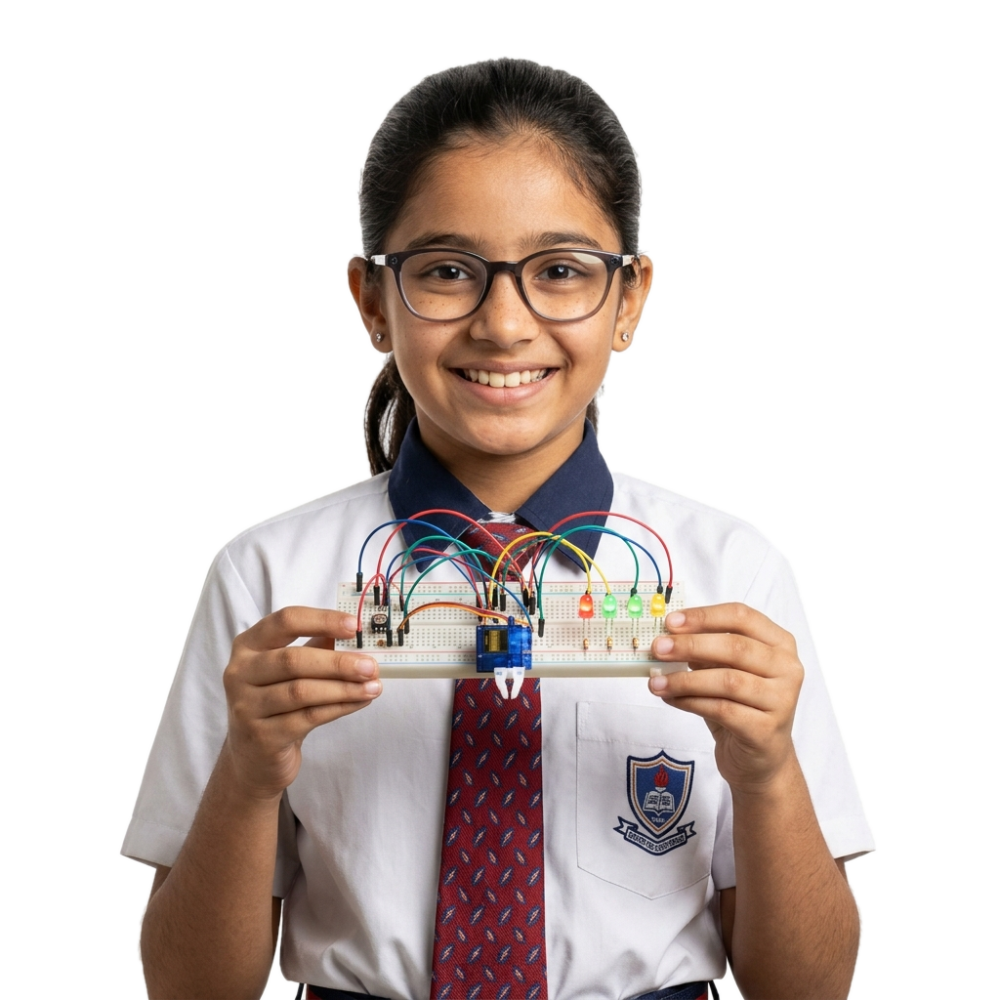
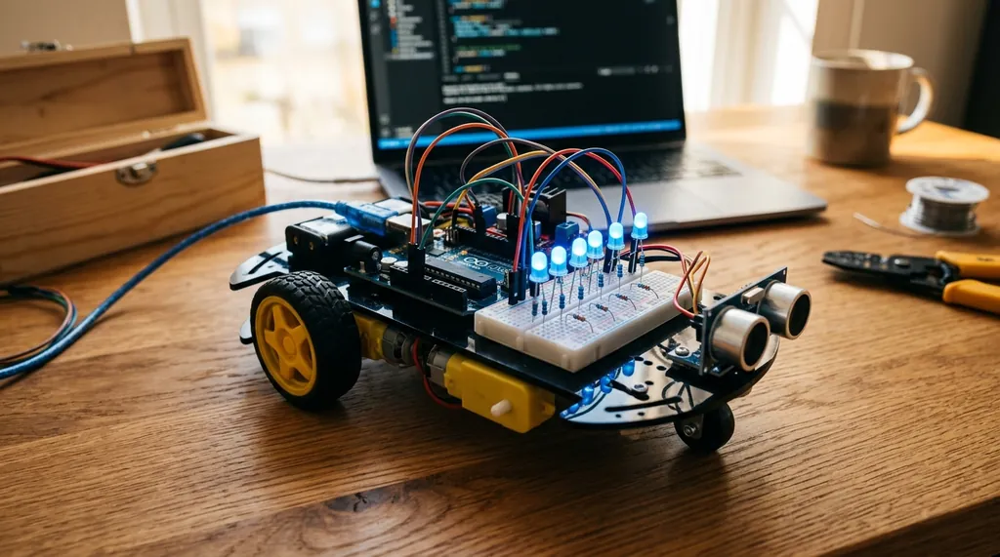
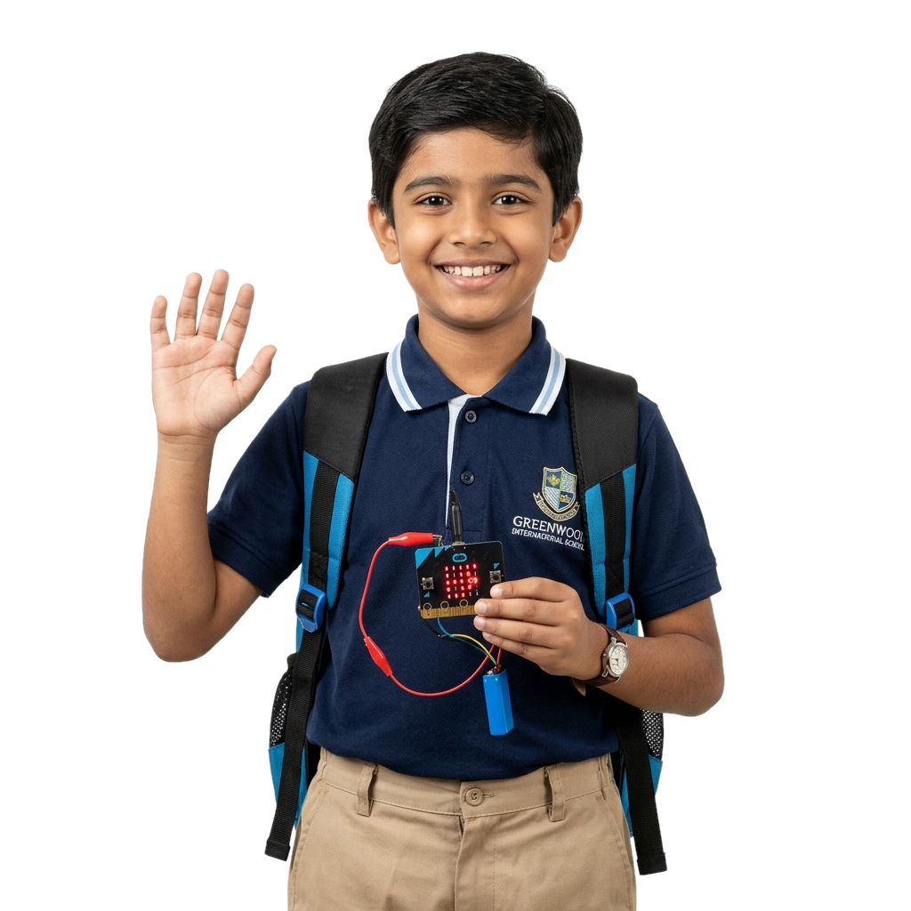

When schools and students have reliable access to certified STEM trainers and hands-on hardware kits, young minds build real electronics, code microcontrollers, and innovate without limits.
When schools and students replace passive theoretical lectures with hands-on hardware prototyping, learners grasp engineering principles faster, retain 4× more knowledge, and stay inspired.
When students wire physical breadboards and flash Arduino C/C++ firmware, abstract concepts in physics and electronics become instantly tangible and exciting.
A better way to connect schools & certified trainers
Schools and institutions get verified, background-checked robotics faculty on-demand for ATL lab sessions, maker bootcamps, and competition mentoring.
Student learning stays on track to build real innovation
Structured 12 to 18 module pathways guide every student from first circuit connections to autonomous obstacle-avoiding cars and national Olympiad triumphs.
Why Choose Our Programs?✦
Schools and parents save time and money while unlocking proven project-based learning. Every student builds real working prototypes with lifetime kits and certified mentorship.

10+
Certified STEM & Robotics Trainers
300+
Hands-On Robotics Projects Built
50+
Schools & ATL Labs Transformed
What Our Lovely Schools
& Parents Say
Read verified reviews from school principals, ATL lab coordinators, and parents whose students discovered the joy of hands-on electronics with NG EDUCATION.
👨💼
Dr. Rajesh Sharma
Principal, Delhi Public School
⭐⭐⭐⭐⭐
"NG EDUCATION replaced rote slides with 100% practical hardware kits. Their certified trainers are punctual, disciplined, and ignite immense excitement in our Grade 6 to 9 students."
👩🏫
Meenakshi Verma
ATL Lab In-Charge, Ryan International
⭐⭐⭐⭐⭐
"Hiring a certified STEM trainer through NG EDUCATION was completely friction-free. Our students built obstacle-avoiding robot cars in 3 days and clinched 1st prize at the state exhibition!"
👨👧
Sunil Kapoor
Parent of Grade 7 Student
⭐⭐⭐⭐⭐
"My son was constantly glued to mobile games. After the Arduino Junior Explorer course, he now builds real LED alarms and obstacle sensors on weekends. Exceptional learning experience!"
Hands-On Programs For Future Engineers✦
High-impact practical courses designed for school students (Class 5–10) and open learners of all ages. Explore flagship tracks or toggle single and combo packages below.

💻
Programming
Arduino Programming Language
Master the C/C++ embedded coding language designed for microcontrollers. Learn program flow, syntax, loops, variables, and serial communication.
C/C++ embedded syntax & pin programming
Conditional logic, loops & custom functions
Serial Monitor debugging & live telemetry
📘16 Modules Syllabus & Exercises
View Full Syllabus →
16 Modules • 20–30 Hours₹999
⚡
Electronics
Arduino Basics & Electronics
Build a rock-solid foundation in electronic circuits, breadboard prototyping, hardware safety, and core electrical components.
Breadboard wiring, circuit loops & Ohm’s Law
Resistors, capacitors, LEDs, diodes & transistors
Arduino board architecture & power rail regulation
⚡12 Modules Syllabus & Practicals
View Full Syllabus →
12 Modules • 12 Practicals₹999
📡
Sensors
Arduino Sensors & Interfacing
Interface and calibrate real-world analog and digital sensory devices to capture environmental signals with precision.
Ultrasonic distance & PIR motion sensing
DHT11/22 temperature & humidity monitoring
LDR light, gas detection & sound sensor modules
📡12 Modules Syllabus & Projects
View Full Syllabus →
12 Modules • 15–20 Hours₹1,199
⚙️
Motors
Arduino Motor Control
Bring mechanical actuation to your projects. Master motor drivers, PWM speed regulation, and precise micro-servo positioning.
DC motor speed & direction with L298N/L293D
Servo motor precision angular sweep (0°–180°)
Stepper motor pulse rotation & driver calibration
⚙️12 Modules Syllabus & Motor Projects
View Full Syllabus →
12 Modules • 15–20 Hours₹1,199
🤖
Robotics
Robotics & Autonomous Bots
Build 3 flagship robotics projects: an autonomous obstacle-avoiding bot, high-speed line tracker, and a multi-axis servo robotic arm.
Obstacle Avoiding Robot with ultrasonic servo radar
Line Following Robot with multi-channel IR sensors
Robotic Arm with multi-axis servos & gripper
🤖12 Modules Syllabus & 3 Flagship Bots
View Full Syllabus →
12 Modules • 20–30 Hours₹1,999
🏡
Automation
Home Automation & Smart Agriculture
Build smart automated systems for modern living: relay-driven automated appliances and automatic soil-moisture irrigation systems.
Advanced Projects: Weather station & multi-sensor data loggers
Capstone engineering build & NG Certification
🚀12 Modules Syllabus & Capstone Projects
View Full Syllabus →
12 Modules • 20–30 Hours₹1,799
🐍
Programming
Python Programming Masterclass
Learn Python from programming fundamentals to advanced development, automation, data handling, SQLite databases, REST APIs and capstone project building.
Core Syntax to OOP: Variables, data structures, functions, OOP & exception handling
Professional Projects: 18 practical coding projects + Full independent capstone application
🐍18 Modules Complete Masterclass Curriculum
View Full Syllabus →
18 Modules • 40–60 Hours₹1,499
Grade 5–8 Favorite
🚀
Save 35% • 2 Tracks
STEM Junior Explorer Combo
Introduce young learners (Ages 8–14) to Computer Science, electronics, coding, and robotics through a hands-on STEM learning journey combining Scratch, Python, Arduino Uno & autonomous robots.
Track 1: Computer Science Foundation: 8 modules covering digital literacy, logic, Scratch, Python & AI concepts
Merge intelligent machine learning algorithms with autonomous robotics hardware and computer vision.
Robotics & Arduino Advanced Track
Full AI & Machine Learning Track
Capstone: AI Vision-Guided Autonomous Rover
₹4,498 Special Combo₹2,999
All-in-One
🏆
Complete Access
Next-Gen Tech Master Bundle
Complete unrestricted access to all 5 tracks: Robotics, AI/ML, Computer Science, DBMS, and Video Editing.
All 5 Technology Tracks
40+ Real-World Hands-on Projects
Direct project mentorship & doubt solving
₹9,795 60% OFF₹3,999

Get in Touch
Join our community
of school partners
Looking to deploy an ATL robotics maker lab or book certified master trainers? NG EDUCATION is now empowering premier schools and students nationwide.
On-Demand School Mentorship
Do you want to hire a Robotics Teacher for a few days for your projects?
Bring verified robotics and STEM instructors directly to your school campus. We help your students construct, code, and troubleshoot high-impact science exhibitions, RoboFest entries, and ATL innovation projects with 100% hands-on success.
⚡
On-Campus Mentorship
In-person guidance for students from Grade 5 to 12.
🏆
Exhibition & RoboFest Prep
Working functional models ready for inter-school competitions.
🛠️
Hardware & Code Debugging
Circuit wiring, sensor testing, and Arduino C++ troubleshooting.
📜
Student Certificates
Official workshop completion certificates for all students.
Transparent Daily Rate
₹4,999 / Day
Includes full-day on-campus instruction, project planning, hardware assistance, and student project mentoring.
We help schools establish turnkey Atal Tinkering Lab (ATL) and modern robotics maker spaces with cutting-edge equipment, grade-wise curricula, and ongoing educator training.
🔌
Electronics & Microcontrollers
Original Arduino Uno boards, Raspberry Pi, sensor banks, motors, relays, breadboards, and power supplies.
🖨️
3D Prototyping & Tools
High-precision 3D printers, safe fabrication toolkits, multimeter stations, and precision mechanical kits.
📚
Grade 5–10 Curriculum
Over 80+ mapped practical lesson plans, illustrated student project workbooks, and teacher guidebooks.
👨🏫
Teacher Training & Support
Annual faculty development programs, online doubt support, and continuous curriculum updates.
Ready to upgrade your school with an innovation center?
Get a customized lab architecture plan, equipment inventory, and quote within 24 hours.
🌱
Our Driving Vision & Social Commitment
We work on Foundation soon to provide Free education for Kids. We believe financial barriers should never stop a child from learning to build robots, understand artificial intelligence, and invent the future.
Direct Communication
Connect With NG EDUCATION
Have a question about our courses, need a robotics mentor for your school, or planning a full STEM lab setup? Talk directly with our team.
Safety & AssemblyExternal power supply, breadboard, jumper wires & connectors
SoftwareArduino IDE, Servo library and appropriate stepper-control library
Course Completion Outcomes
Explain DC, servo and stepper motor operating principles.
Control DC motor direction and speed using suitable drivers and PWM.
Position servo motors using programmed angles.
Calculate step counts and control stepper motor rotation.
Integrate sensors with motor-control logic.
Design and troubleshoot motorized robotics and automation prototypes.
⚠️Important Technical Note: L298N and L293D drivers have different current and thermal limits, so the selected motor must be compatible with the driver. A stepper motor must use a suitable driver and power supply. Never power motors directly from Arduino GPIO pins.
Motor specifications: voltage, current, torque and RPM
Continuous versus controlled movement
Selecting motors for robotics projects
Understanding motor datasheets
HANDS-ON PRACTICALIdentify and compare different motor types
02
Motor Fundamentals & Electrical Safety
6 learning topics
Motor voltage and current requirements
Starting current and stall current
Why Arduino pins cannot directly drive most motors
External motor power supplies
Common ground between Arduino and motor driver
Power isolation, wiring and heat management
HANDS-ON PRACTICALPrepare a safe motor power and wiring plan
03
DC Motor Interfacing with Arduino
6 learning topics
DC motor terminals and polarity
Motor driver fundamentals
L298N and L293D pin configuration
Connecting a motor to driver outputs
Enable pins and direction inputs
Forward, reverse, stop and braking concepts
HANDS-ON PRACTICALControl DC motor direction using Arduino Uno
04
PWM-Based Motor Speed Control
6 learning topics
Pulse Width Modulation fundamentals
Duty cycle and average output voltage
analogWrite() and PWM-capable pins
Speed control using potentiometer input
Minimum effective motor speed
Motor speed variation under different loads
HANDS-ON PRACTICALBuild a variable-speed DC motor controller
05
Dual DC Motor Control & Coordination
6 learning topics
Controlling two motors independently
Forward and reverse movement
Coordinating left and right motors
Turning and pivoting logic
Combining sensor inputs with motor commands
Reusable functions for motion control
HANDS-ON PRACTICALCreate a two-wheel robot movement controller
06
Servo Motor Fundamentals
6 learning topics
How servo motors work
Servo position versus continuous rotation
Servo wiring: power, ground and signal
Using the Arduino Servo library
Controlling angles from 0° to 180° where supported
Mechanical limits and safe positioning
HANDS-ON PRACTICALBuild a servo-controlled sweeping mechanism
07
Advanced Servo Position Control
6 learning topics
Mapping input values to servo angles
Potentiometer-based position control
Multi-position movement sequences
Coordinating multiple servo motors
Movement timing and smooth transitions
Avoiding mechanical binding and overload
HANDS-ON PRACTICALCreate a joystick-free servo positioning system using a potentiometer
08
Stepper Motors & Rotation Control
6 learning topics
Stepper motor operating principles
Unipolar and bipolar stepper motors
Steps per revolution and step angle
Stepper motor wiring and coil identification
Stepper libraries and basic movement commands
Direction and rotation control
HANDS-ON PRACTICALRotate a stepper motor by a defined number of steps
09
Stepper Drivers & Motion Calibration
6 learning topics
Using compatible stepper drivers
STEP and DIR signal concepts
Microstepping and resolution
Setting driver current limits appropriately
Calculating steps for a target rotation
Speed, acceleration and missed-step troubleshooting
HANDS-ON PRACTICALCalibrate stepper rotation to a target angle
10
Motor Timing & Motion Sequences
6 learning topics
Controlling movement duration
Using millis() for non-blocking timing
Sequential motor and servo operations
Basic acceleration and deceleration profiles
Coordinating multiple actuators
Emergency stop and limit-switch concepts
HANDS-ON PRACTICALBuild a timed motorized gate or lift sequence
11
Sensor-Based Motor Automation
6 learning topics
Using ultrasonic and IR sensor inputs
Starting and stopping motors based on conditions
Threshold-based movement control
Combining sensors with motor drivers
Fault detection and safe stopping
Debugging motor-control programs
HANDS-ON PRACTICALCreate an automatic obstacle-responsive motor system
12
Final Motor Control Project
6 learning topics
Select a suitable motor and driver
Prepare wiring diagrams and power calculations
Write modular motion-control code
Test speed, direction, position and rotation
Troubleshoot wiring and mechanical problems
Document and demonstrate the final prototype
HANDS-ON PRACTICALBuild a motorized lift, robotic arm mechanism or dual-motor robot
Single Course Track • 12 Modules • Certificate Included₹1,199
Single Course • 12 Modules • 3 Flagship Projects
Robotics & Autonomous Bots
Design, assemble, and program autonomous robots using Arduino Uno. Learn robot chassis assembly, sensor integration, motor control, navigation logic, and servo-based mechanical movement through three flagship robotics projects.
Course Specifications & Overview
Skill LevelIntermediate–Advanced
Total Modules12 Modules
Flagship Projects3 Complete Autonomous Bots
Recommended Duration20–30 hours
PrerequisitesArduino programming, basic electronics, sensor interfacing and motor control are recommended.
The 3 Flagship Robotics Projects
1. Obstacle-Avoiding RobotAutonomous
Autonomous Navigation & Path Finding
Arduino Uno and dual DC motors
Motor driver and ultrasonic sensor
Servo-based scanning mechanism
Obstacle detection and route selection
Outcome: A robot that detects obstacles and selects an alternative direction.
2. Line Following RobotPrecision
Sensor-Based Track Navigation
Multi-channel IR sensor array
Motor driver and speed control
Line detection and steering logic
Calibration and turn optimization
Outcome: A robot that follows a marked track with calibrated movement.
3. Multi-Axis Robotic ArmMechanical
Mechanical Control & Manipulation
Multiple servo motors
Base, shoulder, elbow and wrist joints
Gripper mechanism
Programmed pick-and-place sequences
Outcome: A programmable robotic arm that handles lightweight objects.
Hardware & Software Requirements
ControllerArduino Uno R3 and USB cable
Mobile RobotChassis, two geared DC motors, wheels and caster wheel
Motor ControlCompatible motor driver, such as L298N
Obstacle SensingHC-SR04 ultrasonic sensor and servo bracket
Line TrackingMulti-channel IR sensor array
Robotic ArmMechanical arm frame, compatible servos and gripper
Power SystemSuitable battery pack, motor supply and regulated servo power
Assembly HardwareJumper wires, screws, mounting brackets and fasteners
SoftwareArduino IDE, Servo library and sensor-control code
Course Completion Outcomes
Assemble and program Arduino-based mobile robots.
Control motor speed, direction and turning.
Integrate ultrasonic and IR sensors for navigation.
Develop obstacle-avoidance and line-tracking logic.
Control multi-axis servo motors and a robotic gripper.
Calibrate, troubleshoot, test and document robotics projects.
⚠️Hardware Note: The Arduino Uno has limited memory and I/O resources, so the robotic arm's servo count and the sensor array must be selected accordingly. Use suitable external power supplies for motors and multiple servos, with a shared ground where required. A high-speed line follower will also require mechanical tuning and repeated track testing; speed is not guaranteed by the curriculum alone.
Build intelligent automation systems using Arduino Uno. Learn to control appliances through relay modules, automate plant irrigation using soil-moisture sensors, and develop automatic streetlights and intrusion alert systems.
Course Specifications & Overview
Skill LevelIntermediate
Total Modules12 Modules
Learning FormatProject-Based Learning
Recommended Duration15–20 hours
PrerequisitesArduino programming, basic electronics and sensor interfacing are recommended.
Featured Automation Projects
1. Smart Home AutomationRelay
Control lights and compatible low-voltage devices using relays, sensors and automated rules.
Relay switching
Motion-based lighting
Automatic and manual control
2. Smart Agriculture & IrrigationAgriculture
Monitor soil moisture and activate a water pump when the soil becomes sufficiently dry.
Moisture sensor calibration
Automatic pump switching
Runtime limits & dry-run protection
3. Automatic Streetlight SystemLDR
Detect low ambient light and switch LED streetlights on automatically.
LDR-based detection
Threshold calibration
Automatic day-night switching
4. Intrusion Detection AlarmSecurity
Detect movement and activate a buzzer and visual warning indicators.
PIR sensor integration
Alarm timing and control
Arming and disarming logic
Hardware & Software Requirements
ControllerArduino Uno R3
SwitchingRelay modules with suitable ratings
SensorsSoil-moisture sensor, LDR, PIR sensor, optional door switch
ActuatorsLow-voltage DC pump, LEDs and buzzer
MonitoringOptional LCD 16×2, resistors and status LEDs
AssemblyBreadboard, jumper wires and suitable connectors
PowerAppropriate regulated supply for Arduino, relays and loads
SoftwareArduino IDE and sensor/control libraries as needed
Course Completion Outcomes
Interface relay modules and control compatible electrical loads.
Automate lighting using ambient-light sensors.
Build a basic intrusion detection and alarm system.
Calibrate soil-moisture sensors for irrigation decisions.
Control a water pump using automatic thresholds and timeouts.
Combine multiple sensors and outputs into an integrated automation prototype.
⚠️Safety Note: For learning activities, use low-voltage DC loads. Mains AC appliance switching must only be designed, enclosed and tested by a qualified person using correctly rated, isolated equipment. Never connect mains wiring directly to an Arduino or exposed breadboard.
Introduction to Home Automation & Smart Agriculture
6 learning topics
What is automation and how it works
Applications of smart homes and precision agriculture
Arduino Uno as an automation controller
Sensors, actuators and control systems
Understanding automated input-output workflows
Planning an automation project
HANDS-ON PRACTICALDesign a basic home or agriculture automation system
02
Relay Modules & Appliance Switching
6 learning topics
Relay working principle and internal contacts
NO, NC and COM terminals
Relay module input and output connections
Controlling low-voltage DC loads
Using transistor-driven or opto-isolated relay modules
Relay ratings, electrical isolation and safe wiring
HANDS-ON PRACTICALControl a low-voltage DC lamp using an Arduino relay module
03
Sensor-Based Home Automation
6 learning topics
Reading PIR motion sensor outputs
Using LDR sensors for ambient light detection
Combining multiple sensor conditions
Automatic appliance switching logic
Configuring thresholds and timing delays
Preventing false triggers and repeated switching
HANDS-ON PRACTICALBuild an automatic room-light controller
04
Smart Lighting & Automatic Streetlights
6 learning topics
LDR voltage divider and analog readings
Daylight and darkness threshold detection
Automatic LED streetlight control
Controlling multiple LED outputs
Energy-saving schedules and hysteresis
Testing performance in different lighting conditions
HANDS-ON PRACTICALBuild an automatic streetlight system
05
Intrusion Detection & Security Alerts
6 learning topics
PIR-based intrusion detection
Door and window switch sensors
Buzzer and LED alert integration
Arming and disarming control logic
Alarm timing and event handling
False-alarm reduction and system testing
HANDS-ON PRACTICALDevelop a home security alarm with intrusion alerts
06
Smart Agriculture Fundamentals
6 learning topics
Introduction to smart farming
Soil-moisture sensing principles
Capacitive versus resistive moisture sensors
Sensor placement and soil variability
Analog readings and threshold selection
Planning a sensor-controlled irrigation system
HANDS-ON PRACTICALMeasure soil moisture and display readings
07
Soil-Moisture Sensor Calibration
6 learning topics
Connecting the sensor to Arduino Uno
Reading raw analog values
Calibrating dry and moist soil readings
Selecting irrigation thresholds
Filtering noisy sensor measurements
Preventing rapid pump switching
HANDS-ON PRACTICALCreate a calibrated soil-moisture monitoring system
08
Automatic Irrigation Pump Control
6 learning topics
DC water pump and driver fundamentals
Relay or suitable driver-based pump switching
Automatic watering based on moisture thresholds
Pump runtime and timeout protection
Water reservoir and dry-run considerations
Testing irrigation performance
HANDS-ON PRACTICALBuild an automatic soil-moisture irrigation system
09
Advanced Irrigation Logic
6 learning topics
Separate dry and wet soil thresholds
Hysteresis and stable switching
Timed watering cycles
Manual override and automatic modes
Multiple plant-zone control fundamentals
Fault handling for disconnected sensors
HANDS-ON PRACTICALDevelop a smart irrigation controller with manual override
10
Display, Monitoring & System Status
6 learning topics
Displaying sensor values on an LCD
Showing pump and relay status
LED indicators for operating modes
Serial Monitor-based debugging
Recording readings and events
Building a simple status dashboard
HANDS-ON PRACTICALCreate a smart agriculture monitoring panel
11
Integrated Automation System
6 learning topics
Combining lighting, security and irrigation logic
Organizing code into reusable functions
Managing multiple sensors and outputs
Non-blocking timing using millis()
Power budgeting and safe wiring checks
Testing each subsystem independently
HANDS-ON PRACTICALBuild a multi-function smart home and garden prototype
12
Final Project & Practical Assessment
6 learning topics
Selecting a real-world automation problem
Preparing circuit diagrams and component lists
Programming and integrating hardware
Testing reliability and safety
Debugging and documenting the solution
Presenting the completed prototype
HANDS-ON PRACTICALDemonstrate an automated home, security or irrigation solution
Single Course Track • 12 Modules • 4 Featured Projects • Certificate Included₹1,499
Single Course • 12 Modules • 4 IoT Cloud Projects
Arduino IoT & Wi-Fi
Connect Arduino-based systems to the internet using Wi-Fi-enabled microcontrollers. Learn wireless communication, cloud dashboards, MQTT messaging, HTTP APIs, remote device control, and real-time sensor monitoring through practical IoT projects.
Course Specifications & Overview
Skill LevelIntermediate–Advanced
Total Modules12 Modules
Learning FormatProject-Based Learning
Recommended Duration20–30 hours
PrerequisitesArduino programming, basic electronics and sensor interfacing are recommended.
Featured IoT Projects
1. Cloud Environmental MonitoringCloud
Measure temperature and humidity, transmit readings over Wi-Fi, and display live data on a cloud dashboard.
Sensor data collection
Live charts & status indicators
Remote cloud monitoring
2. Smartphone Smart DeviceMobile App
Switch a low-voltage device remotely through an IoT app or web dashboard.
MQTT or HTTP communication
Remote commands & device status
Connection recovery
3. IoT Smart Irrigation SystemTelemetry
Monitor soil moisture remotely and automate a suitable low-voltage irrigation pump.
Soil-moisture telemetry
Threshold-based watering
Remote status & alerts
4. IoT Safety Alert SystemAlerts
Monitor sensor thresholds and send notifications when configured conditions are detected.
Sensor-triggered events
Cloud push notifications
Event logging & alert management
Hardware & Software Requirements
ControllersESP8266 development board, ESP32 development board
Optional GatewayArduino Uno with compatible Wi-Fi module
SensorsDHT11/DHT22, LDR, ultrasonic or soil-moisture sensor
OutputsLEDs, buzzer, compatible low-voltage relay or driver
NetworkingWi-Fi access and internet connection
ProtocolsHTTP/REST, JSON and MQTT
PlatformsArduino IDE and a compatible IoT dashboard or broker
ProgrammingArduino C/C++, networking and sensor libraries
Course Completion Outcomes
Configure ESP8266 and ESP32 boards for Wi-Fi connectivity.
Transmit sensor data to compatible cloud services.
Use HTTP APIs and MQTT to exchange telemetry and commands.
Build live dashboards for remote sensor monitoring.
Implement smartphone-based control and event notifications.
Apply basic authentication, connection recovery and IoT security practices.
⚠️Technical Note: The standard Arduino Uno R3 does not have built-in Wi-Fi. Wireless connectivity requires an external module, while ESP8266 and ESP32 development boards provide integrated Wi-Fi. Smartphone control, cloud dashboards and push notifications require a compatible platform or service, internet access where applicable, and appropriate credentials.
Learn to display real-time sensor data, communicate with external modules using I2C and SPI, and exchange information wirelessly through Bluetooth and RF modules. Apply these skills to advanced monitoring systems, weather stations, data loggers, and a final engineering capstone project.
Course Specifications & Overview
Skill LevelIntermediate–Advanced
Total Modules12 Modules
Learning FormatCapstone Project
Recommended Duration20–30 hours
PrerequisitesArduino programming, basic electronics, sensor interfacing and introductory motor or automation concepts are recommended.
Featured Advanced & Capstone Projects
1. Smart Display DashboardOLED/LCD
Display live sensor readings, system status and warnings on an LCD or OLED.
I2C communication
Sensor data formatting
Real-time status updates
2. Arduino Weather StationWeather
Measure and display environmental conditions using temperature, humidity and pressure sensors.
Environmental monitoring
Display integration
Optional data logging
3. Multi-Sensor Data LoggerSD Storage
Collect sensor readings and save them to an SD card for post-analysis.
SD card storage
CSV data records
Sampling and timestamps
4. Engineering CapstoneCapstone
Combine displays, sensors, communication modules and storage into a complete working prototype.
Protocol PeripheralsI2C and SPI-compatible modules
Weather SensingDHT22 and BME280 or equivalent
Data StorageCompatible SD card module and card
AssemblyBreadboard, jumper wires and suitable power supply
SoftwareArduino IDE and relevant display, communication and storage libraries
Course Completion Outcomes
Interface LCD and OLED displays with Arduino Uno.
Explain and use I2C, SPI and UART communication.
Exchange data using compatible Bluetooth and RF modules.
Display multiple sensor readings in a structured dashboard.
Build a weather station and save sensor data to an SD card.
Design, test, document and present an integrated engineering project.
📜Certification Note: Official NG Education Course Completion Certificates are awarded upon successfully submitting and demonstrating the Capstone Project and passing the practical assessment criteria.
Introduce young learners to the exciting world of Computer Science, electronics, coding and robotics through a hands-on STEM learning journey. This combo combines foundational computing skills with Arduino-based projects, logical thinking and engineering challenges.
Hardware UsedArduino Uno kit & basic electronics components
Final OutcomeCS mini project + Robotics capstone demonstration
Recommended Course PositioningMarketed as a beginner-friendly STEM combo for students who want to explore both software and hardware before choosing a specialized path in programming, robotics, AI or IoT.
What the Combo Includes
💻Computer Science Foundation
Digital literacy, computational thinking, visual coding, introductory Python and responsible technology use.
⚡Arduino & Electronics
Circuit building, Arduino programming, component identification and sensor interfacing.
🤖Hands-on Robotics
Motor control, obstacle avoidance, line following and practical engineering projects.
🏆Assessment & Capstone
Quizzes, coding assignments, practical demonstrations and a final student project.
Learning Outcomes — By Completing This Combo, Students Will Be Able To:
Understand basic computer operations and digital safety.
Apply computational thinking and create simple programs.
Write beginner-level Python code.
Build basic electronic circuits with Arduino Uno.
Program sensors, LEDs, buzzers and motors.
Assemble and demonstrate a basic autonomous robot.
Explain their design choices and present a working project.
Learning Track 1
Computer Science Foundation
8 Modules • Digital Literacy, Logic & Coding
01
Introduction to Computers & Digital Literacy
5 learning topics
What is a computer and how it works
Hardware and software fundamentals
Input, processing, output and storage
Operating systems and file management
Keyboard, mouse and basic computer operations
PRACTICAL ACTIVITYCreate and organize a digital project folder
02
Internet, Web & Cyber Safety
5 learning topics
How the internet works
Web browsers and search engines
Websites and basic online research
Passwords, privacy and personal information
Cyberbullying awareness and responsible digital citizenship
PRACTICAL ACTIVITYPrepare a digital safety checklist
03
Computational Thinking & Logic
5 learning topics
Breaking problems into smaller steps
Algorithms and step-by-step instructions
Flowcharts and pseudocode
Patterns, sequences and logical reasoning
Debugging simple instructions
PRACTICAL ACTIVITYCreate a flowchart for a real-world task
04
Block-Based Coding
5 learning topics
Introduction to Scratch or a similar visual coding tool
Sprites, backgrounds and events
Sequences, loops and conditions
Variables and simple interactions
Debugging and improving programs
PRACTICAL ACTIVITYCreate an interactive animation or mini-game
05
Introduction to Text-Based Coding
5 learning topics
What is a programming language?
Introduction to Python syntax
Variables, data types and output
Conditions and loops
Simple functions and problem-solving
PRACTICAL ACTIVITYBuild a quiz game or number guessing game
06
Digital Creativity & Design
5 learning topics
Introduction to digital graphics
Basic design principles and visual communication
Creating presentations and diagrams
Designing a simple project poster
Presenting technical ideas clearly
PRACTICAL ACTIVITYCreate a poster explaining a technology concept
07
Introduction to AI & Emerging Technologies
5 learning topics
What is Artificial Intelligence?
Everyday applications of AI
How sensors and computers make decisions
AI ethics, privacy and responsible use
Introduction to robotics, IoT and automation
PRACTICAL ACTIVITYDesign a concept for an AI-assisted smart device
08
Computer Science Mini Project
5 learning topics
Identify a problem to solve
Plan the solution using an algorithm
Build a small coding project
Test and debug the solution
Document and present the project
PRACTICAL ACTIVITYCreate a Scratch game or beginner Python application
Learning Track 2
Robotics & Arduino
10 Modules • Electronics, Sensors, Motors & Robot Building
01
Introduction to Robotics & Engineering
5 learning topics
What is a robot?
Robot components: controller, sensors and actuators
Types and applications of robots
Introduction to Arduino Uno
Engineering design and problem-solving
PRACTICAL PROJECTDesign a simple robot concept
02
Electronics & Circuit Building
5 learning topics
Voltage, current and resistance
Breadboard connections and circuit loops
LEDs, resistors, switches and jumper wires
Basic circuit diagrams
Hardware safety and polarity
PRACTICAL PROJECTBuild an LED traffic light circuit
03
Arduino Programming Fundamentals
5 learning topics
Arduino IDE and sketch structure
setup() and loop()
Variables and data types
Conditions and loops
Digital inputs and outputs
PRACTICAL PROJECTCreate programmable LED patterns
04
Sensors & Environmental Inputs
5 learning topics
Digital and analog sensors
Ultrasonic distance measurement
IR obstacle detection
LDR light sensing
Reading and interpreting sensor data
PRACTICAL PROJECTBuild a distance meter or automatic night lamp
05
Motors & Movement Control
5 learning topics
DC motor fundamentals
Motor drivers and safe power connections
Forward, reverse and stop commands
PWM-based speed control
Servo motor positioning
PRACTICAL PROJECTBuild a motorized mechanism or servo barrier gate
06
Obstacle-Avoiding Robot
5 learning topics
Robot chassis and wheel assembly
Motor driver wiring
Ultrasonic sensor integration
Obstacle detection and turning logic
Testing and movement calibration
PRACTICAL PROJECTBuild a two-wheel obstacle-avoiding robot
07
Line-Following Robot
5 learning topics
IR sensor array fundamentals
Line detection and calibration
Motor coordination and steering
Turning and line-loss recovery
Track testing and performance improvement
PRACTICAL PROJECTBuild a line-following robot
08
Smart Systems & Automation
5 learning topics
Sensor-based automation logic
Buzzer and LED alerts
Relay and low-voltage switching fundamentals
Automatic lighting and security concepts
Basic smart agriculture and irrigation
PRACTICAL PROJECTBuild a smart night lamp or soil-moisture monitor
09
IoT & Connected Devices Introduction
5 learning topics
What is the Internet of Things?
Arduino Uno versus ESP8266 and ESP32
Wi-Fi-enabled sensor monitoring concepts
Cloud dashboards and remote monitoring
Responsible handling of device credentials
PRACTICAL PROJECTDesign a connected sensor monitoring prototype
10
Robotics Capstone & Demonstration
5 learning topics
Select an engineering problem
Prepare the circuit and component list
Build and program the prototype
Test, troubleshoot and improve
Present the solution and explain how it works
PRACTICAL PROJECTCreate a student-designed robotics or automation prototype